Obdobie dát: 23.10.2026 08:57 – 03.11.2026 13:37
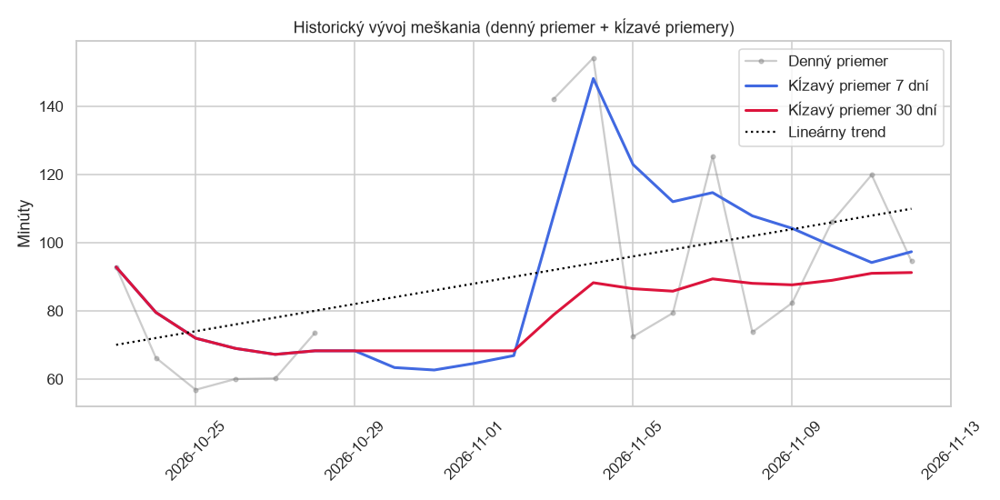
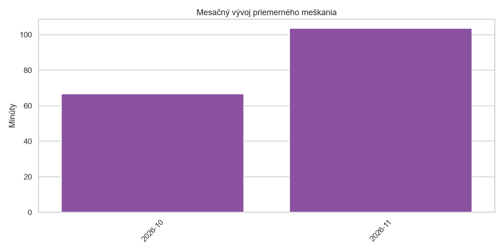
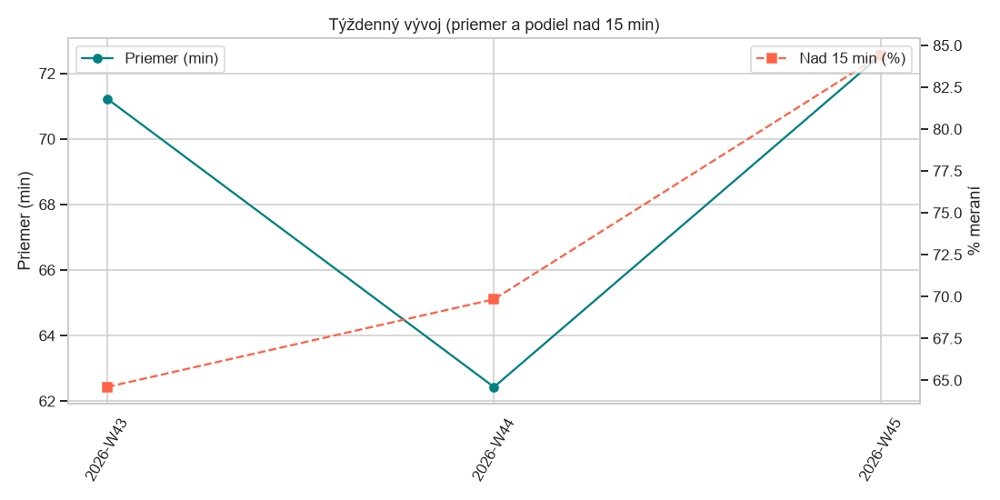
| Zaznamov | Priemer | Median | P90 | Max | Std | Meskaju_pct | Nad5_pct | Nad15_pct | Nad60_pct | |
|---|---|---|---|---|---|---|---|---|---|---|
| Mesiac | ||||||||||
| 2026-10 | 17260 | 66.60 | 20.00 | 120.00 | 2176 | 193.21 | 96.23 | 85.27 | 67.36 | 13.24 |
| 2026-11 | 1235 | 72.30 | 25.00 | 243.60 | 602 | 107.79 | 99.19 | 95.55 | 84.62 | 22.35 |
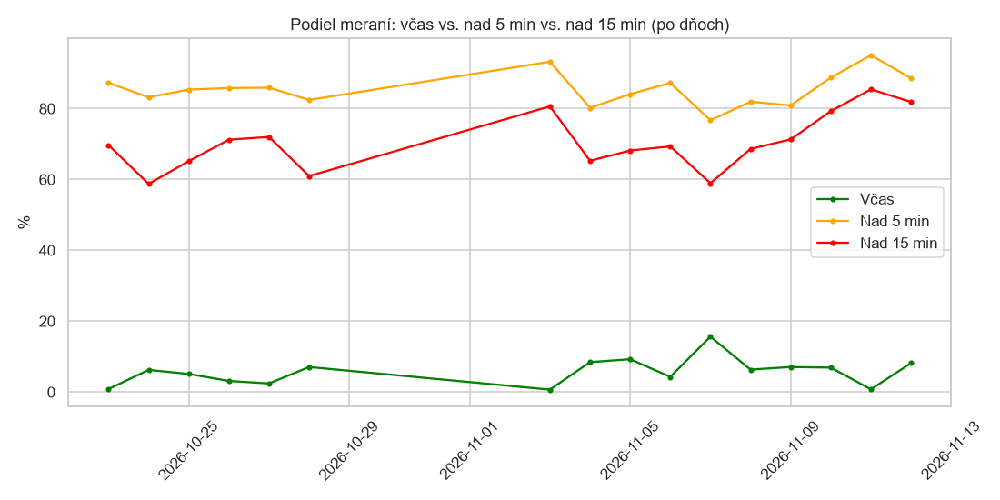
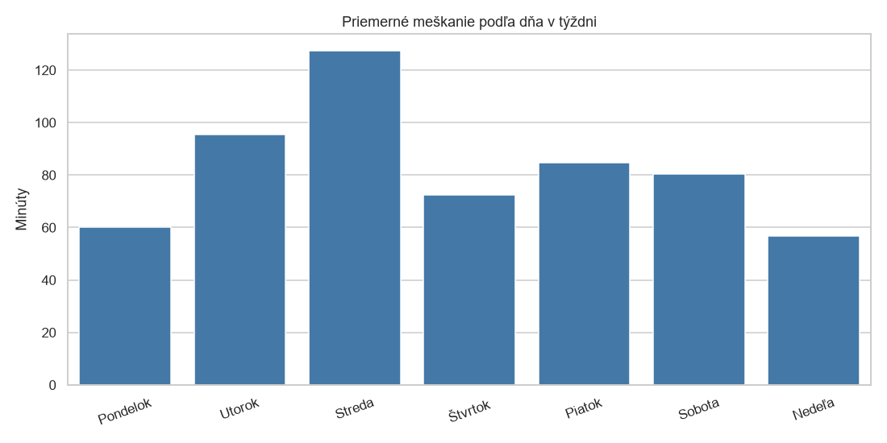
| Zaznamov | Priemer | Median | P90 | Max | Std | Meskaju_pct | Nad5_pct | Nad15_pct | Nad60_pct | |
|---|---|---|---|---|---|---|---|---|---|---|
| Den | ||||||||||
| Pondelok | 3131 | 60.02 | 22.00 | 122.00 | 1372 | 170.06 | 96.87 | 85.79 | 71.22 | 13.41 |
| Utorok | 5630 | 62.86 | 22.00 | 150.00 | 1212 | 135.09 | 97.92 | 88.01 | 74.76 | 16.18 |
| Streda | 1555 | 73.55 | 17.00 | 58.60 | 1372 | 246.33 | 92.93 | 82.44 | 60.96 | 9.77 |
| Piatok | 2603 | 92.85 | 20.00 | 125.80 | 2172 | 271.77 | 99.15 | 87.25 | 69.69 | 13.95 |
| Sobota | 2545 | 66.23 | 19.00 | 83.00 | 2176 | 195.90 | 93.75 | 83.18 | 58.74 | 13.99 |
| Nedeľa | 3031 | 56.87 | 20.00 | 78.00 | 1491 | 161.43 | 94.89 | 85.35 | 65.16 | 11.84 |
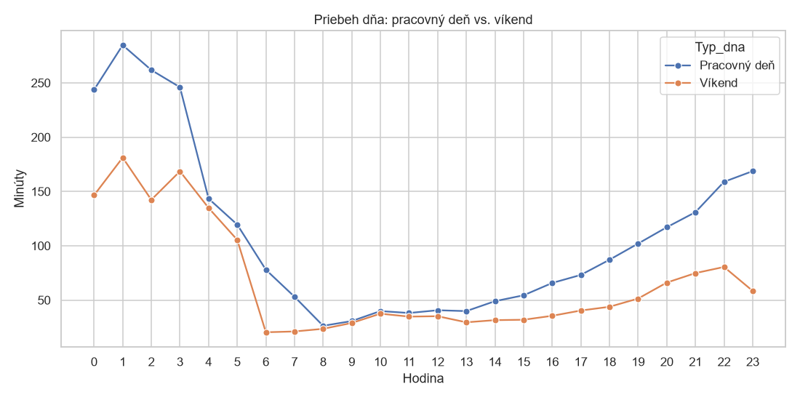
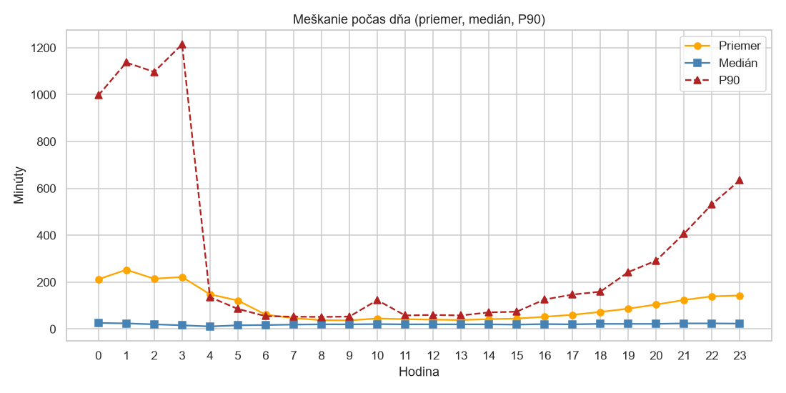
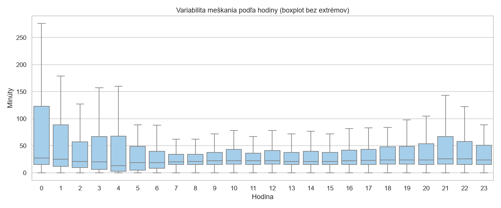
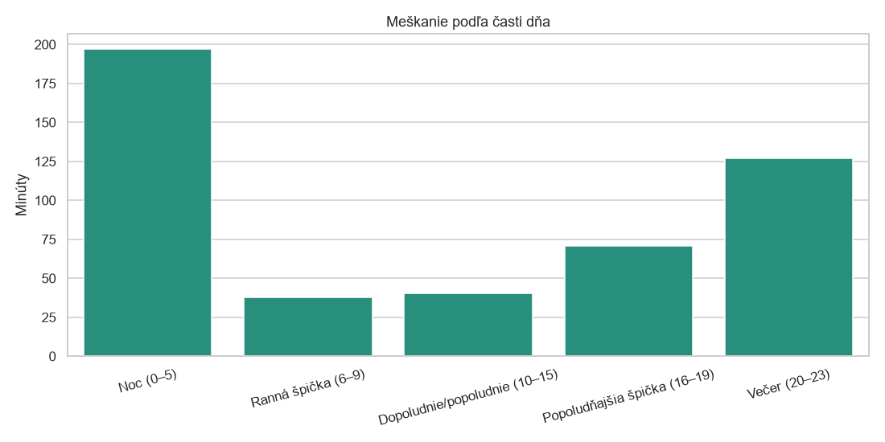
| Zaznamov | Priemer | Median | P90 | Max | Std | Meskaju_pct | Nad5_pct | Nad15_pct | Nad60_pct | |
|---|---|---|---|---|---|---|---|---|---|---|
| Cast_dna | ||||||||||
| Noc (0–5) | 2502 | 130.66 | 16.00 | 273.00 | 2176 | 340.76 | 91.13 | 83.33 | 55.36 | 15.03 |
| Ranná špička (6–9) | 2331 | 28.99 | 20.00 | 55.00 | 485 | 37.62 | 95.37 | 83.40 | 64.95 | 8.58 |
| Dopoludnie/popoludnie (10–15) | 6062 | 41.39 | 20.00 | 70.00 | 1211 | 87.91 | 96.45 | 85.73 | 70.65 | 11.35 |
| Popoludňajšia špička (16–19) | 3877 | 59.71 | 21.00 | 143.00 | 1691 | 143.26 | 97.03 | 85.04 | 72.63 | 16.53 |
| Večer (20–23) | 3723 | 97.21 | 22.00 | 252.00 | 2172 | 241.74 | 99.97 | 90.65 | 71.80 | 17.62 |
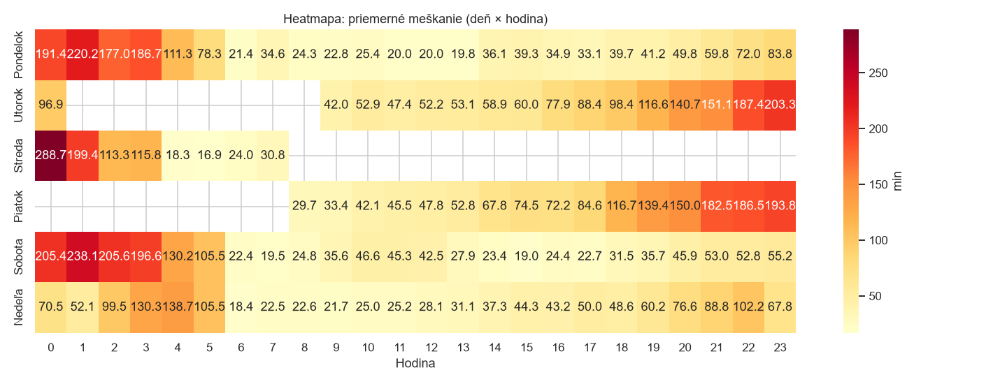
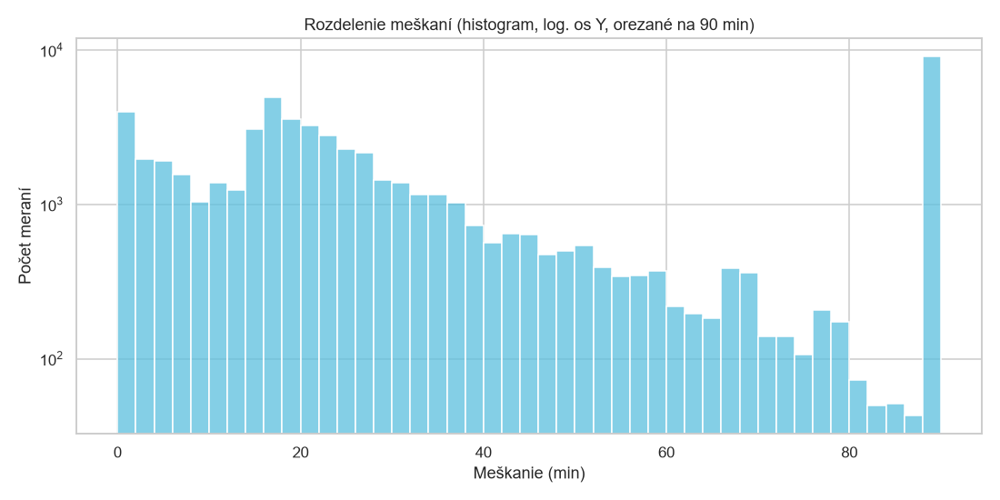
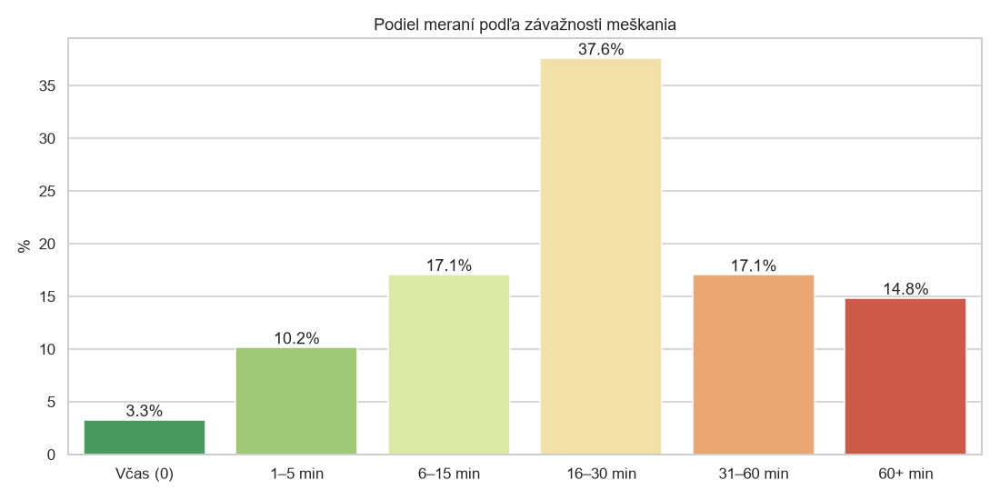
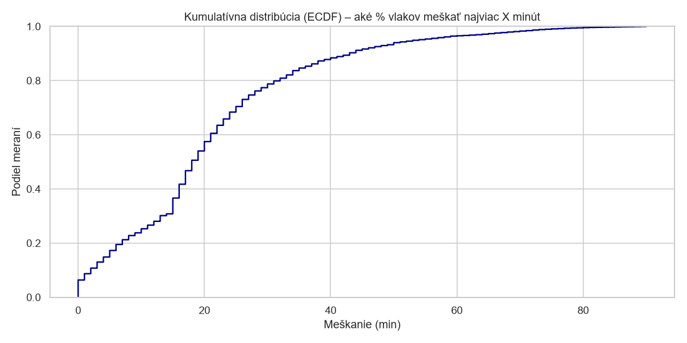
| Percentil | Minuty |
|---|---|
| P25 | 13.00 |
| P50 | 20.00 |
| P75 | 36.00 |
| P90 | 125.00 |
| P95 | 262.00 |
| P99 | 1,200.12 |
| P99.9 | 1,808.57 |
| Zaznamov | Podiel_% | |
|---|---|---|
| Kategoria | ||
| Včas (0) | 661 | 3.57 |
| 1–5 min | 1936 | 10.47 |
| 6–15 min | 3227 | 17.45 |
| 16–30 min | 7036 | 38.04 |
| 31–60 min | 3074 | 16.62 |
| 60+ min | 2561 | 13.85 |
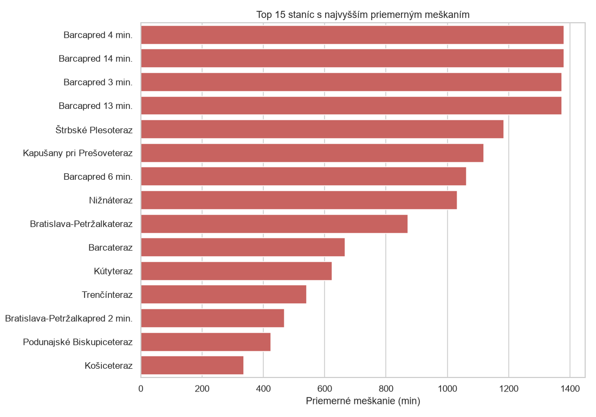
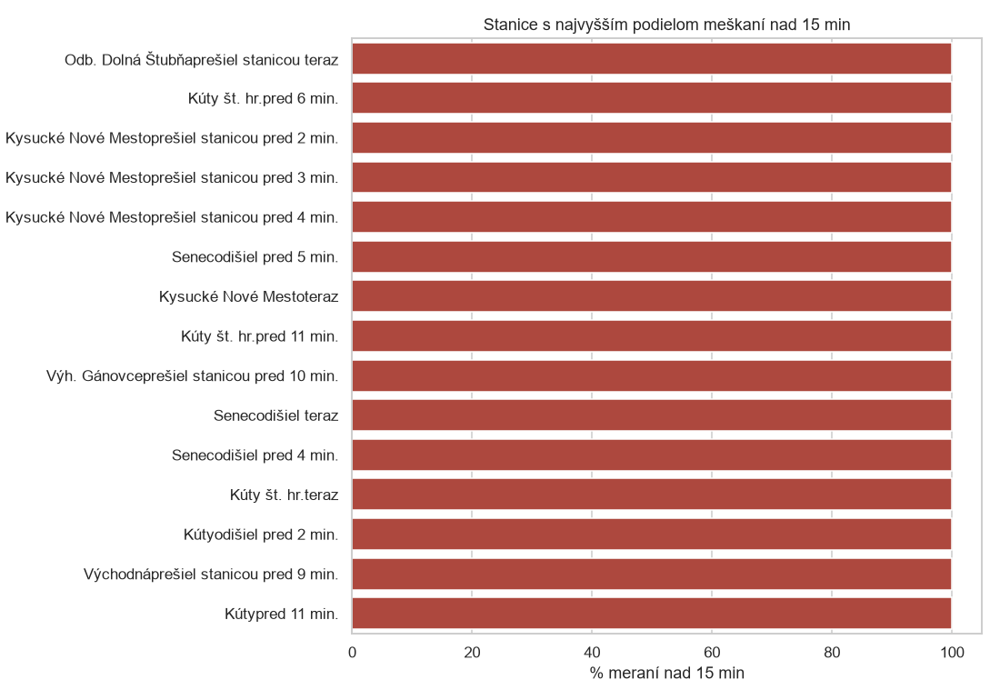
| Zaznamov | Priemer | Median | P90 | Max | Std | Meskaju_pct | Nad5_pct | Nad15_pct | Nad60_pct | |
|---|---|---|---|---|---|---|---|---|---|---|
| Stanica_Poloha | ||||||||||
| Štrbské Plesoteraz | 93 | 1,184.03 | 1,211.00 | 1,955.00 | 2172 | 577.94 | 100.00 | 100.00 | 100.00 | 100.00 |
| Barcapred 6 min. | 5 | 1,062.80 | 1,097.00 | 1,371.60 | 1372 | 328.96 | 100.00 | 100.00 | 100.00 | 100.00 |
| Barcateraz | 664 | 679.31 | 646.00 | 1,250.70 | 1485 | 419.30 | 100.00 | 100.00 | 99.85 | 91.57 |
| Košiceteraz | 173 | 368.43 | 164.00 | 1,011.00 | 1371 | 403.65 | 100.00 | 100.00 | 95.95 | 57.80 |
| Kapušany pri Prešoveteraz | 57 | 278.28 | 272.00 | 504.00 | 602 | 163.90 | 100.00 | 100.00 | 100.00 | 84.21 |
| Kysakteraz | 48 | 252.83 | 263.00 | 417.60 | 517 | 145.35 | 100.00 | 100.00 | 97.92 | 83.33 |
| Podhájskateraz | 13 | 239.62 | 270.00 | 290.80 | 360 | 98.26 | 100.00 | 100.00 | 100.00 | 84.62 |
| Nemšováteraz | 8 | 213.00 | 213.00 | 271.00 | 278 | 54.77 | 100.00 | 100.00 | 100.00 | 100.00 |
| Bratislava-Petržalkateraz | 32 | 205.12 | 166.00 | 410.00 | 501 | 164.42 | 100.00 | 100.00 | 100.00 | 65.62 |
| Bratislava predmestieteraz | 13 | 180.92 | 169.00 | 277.00 | 289 | 84.35 | 100.00 | 100.00 | 100.00 | 84.62 |
| Kútypred 11 min. | 5 | 179.20 | 173.00 | 345.80 | 405 | 159.47 | 100.00 | 100.00 | 100.00 | 60.00 |
| Štúrovo št. hr.teraz | 8 | 169.38 | 175.00 | 287.60 | 366 | 107.57 | 100.00 | 100.00 | 100.00 | 75.00 |
| Štúrovo št. hr.pred 11 min. | 7 | 168.00 | 175.00 | 298.80 | 366 | 116.11 | 100.00 | 100.00 | 100.00 | 71.43 |
| Kútyteraz | 82 | 157.29 | 49.50 | 412.20 | 618 | 175.02 | 100.00 | 100.00 | 65.85 | 47.56 |
| Devínska Nová Vesteraz | 86 | 155.37 | 129.50 | 378.50 | 522 | 145.60 | 100.00 | 100.00 | 94.19 | 54.65 |
| Žiar nad Hronomteraz | 10 | 153.90 | 43.50 | 365.30 | 368 | 154.55 | 100.00 | 100.00 | 100.00 | 40.00 |
| Púchovteraz | 158 | 143.13 | 120.00 | 381.70 | 533 | 138.35 | 100.00 | 100.00 | 96.84 | 51.27 |
| Malá Lodinateraz | 9 | 137.33 | 144.00 | 188.00 | 244 | 60.83 | 100.00 | 100.00 | 100.00 | 77.78 |
| Gbelceprešiel stanicou pred 3 min. | 5 | 127.20 | 26.00 | 308.60 | 397 | 165.11 | 100.00 | 100.00 | 100.00 | 40.00 |
| Zohorprešiel stanicou teraz | 6 | 124.33 | 35.50 | 317.50 | 394 | 157.58 | 100.00 | 100.00 | 83.33 | 33.33 |
| Trenčianska Tepláteraz | 19 | 124.32 | 142.00 | 185.00 | 241 | 67.75 | 100.00 | 100.00 | 100.00 | 68.42 |
| Šaštín-Strážeteraz | 5 | 119.00 | 131.00 | 147.00 | 151 | 39.62 | 100.00 | 100.00 | 100.00 | 80.00 |
| Banská Bystricateraz | 16 | 117.44 | 126.00 | 249.00 | 265 | 87.22 | 100.00 | 100.00 | 100.00 | 56.25 |
| Galantaprešiel stanicou teraz | 7 | 117.00 | 41.00 | 311.80 | 394 | 148.42 | 100.00 | 100.00 | 100.00 | 28.57 |
| Palárikovoprešiel stanicou pred 2 min. | 6 | 114.00 | 42.00 | 282.50 | 395 | 149.09 | 100.00 | 100.00 | 100.00 | 33.33 |
| Zaznamov | Priemer | Median | P90 | Max | Std | Meskaju_pct | Nad5_pct | Nad15_pct | Nad60_pct | |
|---|---|---|---|---|---|---|---|---|---|---|
| Stanica_Poloha | ||||||||||
| 0 | 340 | 0.00 | 0.00 | 0.00 | 0 | 0.00 | 0.00 | 0.00 | 0.00 | 0.00 |
| Trnava nákladná stanica | 14 | 2.50 | 0.00 | 10.20 | 13 | 4.54 | 42.86 | 21.43 | 0.00 | 0.00 |
| Veľké Kostoľany | 12 | 4.42 | 0.50 | 13.20 | 28 | 8.48 | 50.00 | 25.00 | 8.33 | 0.00 |
| Výh. Potvorice | 6 | 4.67 | 2.50 | 10.50 | 14 | 5.13 | 83.33 | 33.33 | 0.00 | 0.00 |
| Výh. Ružín | 15 | 5.20 | 2.00 | 15.60 | 19 | 6.25 | 86.67 | 26.67 | 13.33 | 0.00 |
| Žilina | 20 | 5.40 | 0.00 | 19.30 | 26 | 8.57 | 40.00 | 30.00 | 20.00 | 0.00 |
| Turany | 11 | 5.82 | 2.00 | 14.00 | 20 | 6.45 | 90.91 | 45.45 | 9.09 | 0.00 |
| Výh. Nivy | 10 | 5.90 | 4.00 | 16.10 | 17 | 6.15 | 100.00 | 30.00 | 20.00 | 0.00 |
| 4 | 282 | 6.16 | 3.00 | 10.90 | 80 | 10.88 | 100.00 | 14.18 | 8.16 | 0.35 |
| Brestovany | 17 | 6.71 | 0.00 | 17.60 | 45 | 11.95 | 47.06 | 29.41 | 17.65 | 0.00 |
| 6 | 160 | 6.74 | 4.00 | 10.00 | 85 | 10.35 | 100.00 | 24.38 | 5.62 | 1.25 |
| Vrútky | 26 | 6.96 | 5.00 | 20.00 | 28 | 8.16 | 65.38 | 50.00 | 15.38 | 0.00 |
| 1 | 373 | 7.17 | 2.00 | 16.00 | 100 | 10.77 | 59.52 | 44.50 | 14.21 | 0.54 |
| Ladce | 8 | 7.38 | 4.50 | 19.20 | 22 | 8.42 | 75.00 | 37.50 | 25.00 | 0.00 |
| 3 | 292 | 7.48 | 2.00 | 27.00 | 60 | 12.52 | 100.00 | 22.60 | 15.75 | 0.00 |
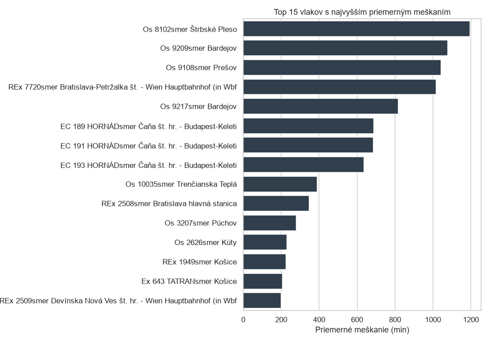
| Zaznamov | Priemer | Median | P90 | Max | Std | Meskaju_pct | Nad5_pct | Nad15_pct | Nad60_pct | |
|---|---|---|---|---|---|---|---|---|---|---|
| Vlak | ||||||||||
| Os 8102smer Štrbské Pleso | 94 | 1,194.59 | 1,216.00 | 1,964.70 | 2176 | 583.86 | 100.00 | 100.00 | 100.00 | 100.00 |
| EC 191 HORNÁDsmer Čaňa št. hr. - Budapest-Keleti | 272 | 699.77 | 690.00 | 1,255.60 | 1377 | 417.54 | 100.00 | 100.00 | 100.00 | 92.65 |
| EC 189 HORNÁDsmer Čaňa št. hr. - Budapest-Keleti | 277 | 682.44 | 652.00 | 1,253.20 | 1372 | 418.16 | 100.00 | 100.00 | 99.64 | 91.70 |
| EC 193 HORNÁDsmer Čaňa št. hr. - Budapest-Keleti | 238 | 664.24 | 616.00 | 1,321.20 | 1491 | 430.60 | 100.00 | 100.00 | 99.58 | 91.60 |
| Os 10035smer Trenčianska Teplá | 23 | 389.83 | 394.00 | 402.00 | 405 | 11.75 | 100.00 | 100.00 | 100.00 | 100.00 |
| Os 9209smer Bardejov | 27 | 316.56 | 292.00 | 516.00 | 602 | 160.15 | 100.00 | 100.00 | 100.00 | 92.59 |
| Os 2626smer Kúty | 29 | 310.48 | 290.00 | 528.00 | 618 | 181.50 | 100.00 | 100.00 | 100.00 | 86.21 |
| REx 2508smer Bratislava hlavná stanica | 25 | 296.40 | 282.00 | 498.00 | 522 | 148.66 | 100.00 | 100.00 | 100.00 | 92.00 |
| Os 9108smer Prešov | 25 | 281.80 | 277.00 | 493.00 | 517 | 149.98 | 100.00 | 100.00 | 100.00 | 88.00 |
| Os 3207smer Púchov | 43 | 279.65 | 279.00 | 488.00 | 533 | 150.81 | 100.00 | 100.00 | 100.00 | 86.05 |
| REx 7720smer Bratislava-Petržalka št. - Wien Hauptbahnhof (in Wbf | 25 | 256.20 | 261.00 | 453.00 | 501 | 149.98 | 100.00 | 100.00 | 100.00 | 84.00 |
| REx 1949smer Košice | 32 | 225.53 | 212.00 | 480.00 | 517 | 170.58 | 100.00 | 100.00 | 96.88 | 68.75 |
| Ex 643 TATRANsmer Košice | 25 | 206.88 | 179.00 | 395.00 | 419 | 139.76 | 100.00 | 100.00 | 100.00 | 72.00 |
| REx 2509smer Devínska Nová Ves št. hr. - Wien Hauptbahnhof (in Wbf | 17 | 199.71 | 175.00 | 323.00 | 375 | 105.48 | 100.00 | 100.00 | 100.00 | 82.35 |
| R 839 URPÍNsmer Banská Bystrica | 76 | 186.63 | 244.00 | 363.00 | 372 | 138.62 | 100.00 | 100.00 | 97.37 | 61.84 |
| Os 5409smer Trenčianska Teplá | 6 | 185.33 | 166.00 | 242.00 | 243 | 44.78 | 100.00 | 100.00 | 100.00 | 100.00 |
| EC 145 OSTRAVANsmer Žilina | 20 | 173.75 | 247.00 | 253.00 | 253 | 106.16 | 100.00 | 100.00 | 100.00 | 70.00 |
| Os 5408smer Horné Srnie | 12 | 173.58 | 163.00 | 267.00 | 278 | 77.44 | 100.00 | 100.00 | 100.00 | 83.33 |
| R 754 BOJNICEsmer Bratislava-Nové Mesto | 19 | 170.89 | 171.00 | 177.20 | 178 | 5.52 | 100.00 | 100.00 | 100.00 | 100.00 |
| ra 175 HUNGARIAsmer Štúrovo št. hr. - Budapest-Nyugati | 93 | 160.86 | 168.00 | 257.00 | 259 | 88.58 | 100.00 | 100.00 | 97.85 | 73.12 |
| Zaznamov | Priemer | Median | P90 | Max | Std | Meskaju_pct | Nad5_pct | Nad15_pct | Nad60_pct | |
|---|---|---|---|---|---|---|---|---|---|---|
| Vlak | ||||||||||
| mešká 30-59 minút | 774 | 3.60 | 2.00 | 7.70 | 53 | 5.17 | 80.88 | 13.95 | 3.62 | 0.00 |
| mešká 60 a viac minút | 774 | 5.27 | 2.00 | 16.00 | 100 | 10.61 | 68.22 | 18.60 | 10.47 | 0.26 |
| Ex 618 TATRAN | 785 | 10.35 | 7.00 | 34.00 | 79 | 10.53 | 94.01 | 55.41 | 19.75 | 0.13 |
| mešká 15-29 minút | 774 | 7.79 | 6.00 | 14.00 | 66 | 6.76 | 93.41 | 57.88 | 9.04 | 0.13 |
| Ex 610 TATRAN | 785 | 11.91 | 11.00 | 22.00 | 35 | 9.07 | 95.16 | 72.87 | 39.49 | 0.00 |
| Ex 620 TATRAN | 785 | 9.81 | 7.00 | 26.00 | 26 | 7.85 | 94.65 | 77.20 | 19.36 | 0.00 |
| Ex 614 TATRAN | 785 | 13.11 | 12.00 | 22.00 | 39 | 6.63 | 97.45 | 87.52 | 25.10 | 0.00 |
| Ex 621 TATRAN | 785 | 22.08 | 16.00 | 43.60 | 50 | 14.62 | 97.07 | 90.19 | 67.77 | 0.00 |
| mešká 5-14 minút | 774 | 17.89 | 18.00 | 27.00 | 57 | 7.93 | 95.99 | 94.44 | 62.92 | 0.00 |
| mešká do 5 minút | 774 | 63.31 | 68.00 | 81.00 | 93 | 18.42 | 98.06 | 98.06 | 95.87 | 69.90 |
| Os 6405smer Košice | 6 | 15.00 | 15.00 | 15.00 | 15 | 0.00 | 100.00 | 100.00 | 0.00 | 0.00 |
| REx 7769smer Bratislava-Petržalka | 5 | 15.00 | 15.00 | 15.00 | 15 | 0.00 | 100.00 | 100.00 | 0.00 | 0.00 |
| REx 1925smer Humenné | 6 | 15.17 | 15.00 | 15.50 | 16 | 0.41 | 100.00 | 100.00 | 16.67 | 0.00 |
| REx 1787smer Margecany | 5 | 15.20 | 15.00 | 15.60 | 16 | 0.45 | 100.00 | 100.00 | 20.00 | 0.00 |
| Os 2414smer Skalica na Slovensku | 37 | 15.38 | 15.00 | 17.00 | 19 | 1.04 | 100.00 | 100.00 | 13.51 | 0.00 |
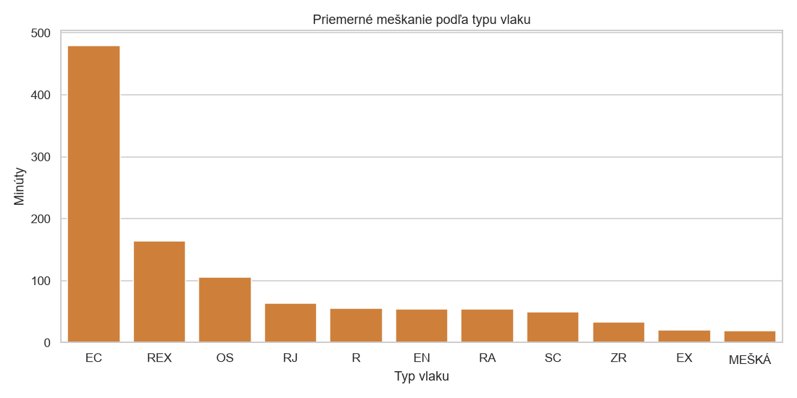
| Zaznamov | Priemer | Median | P90 | Max | Std | Meskaju_pct | Nad5_pct | Nad15_pct | Nad60_pct | |
|---|---|---|---|---|---|---|---|---|---|---|
| Typ_vlaku | ||||||||||
| EC | 1262 | 444.70 | 261.00 | 1,211.90 | 1491 | 454.18 | 100.00 | 100.00 | 98.10 | 62.20 |
| RA | 563 | 74.91 | 38.00 | 177.00 | 259 | 74.87 | 100.00 | 100.00 | 96.63 | 30.02 |
| OS | 3990 | 73.54 | 22.00 | 140.00 | 2176 | 208.57 | 100.00 | 100.00 | 89.90 | 13.83 |
| REX | 774 | 59.52 | 28.00 | 143.00 | 522 | 92.93 | 100.00 | 100.00 | 93.41 | 14.47 |
| R | 1690 | 50.92 | 30.00 | 134.00 | 372 | 58.41 | 100.00 | 100.00 | 94.50 | 15.27 |
| RJ | 513 | 41.63 | 26.00 | 79.80 | 265 | 45.34 | 100.00 | 100.00 | 95.32 | 10.92 |
| EN | 132 | 23.30 | 19.00 | 33.00 | 135 | 15.22 | 100.00 | 100.00 | 84.85 | 1.52 |
| MEŠKÁ | 3870 | 19.57 | 8.00 | 68.00 | 100 | 24.91 | 87.31 | 56.59 | 36.38 | 14.06 |
| SC | 99 | 19.31 | 18.00 | 25.00 | 31 | 3.83 | 100.00 | 100.00 | 84.85 | 0.00 |
| EX | 5602 | 19.24 | 16.00 | 36.00 | 419 | 22.94 | 96.97 | 83.63 | 51.57 | 1.48 |
| Timestamp | Vlak | Stanica_Poloha | Meskanie_Text | Meskanie_Minuty |
|---|---|---|---|---|
| 2026-10-24 00:08 | Os 8102smer Štrbské Pleso | Štrbské Plesopred 6 min. | + 1096 minút= 18 hod, 16 min. | 2176 |
| 2026-10-23 23:57 | Os 8102smer Štrbské Pleso | Štrbské Plesoteraz | + 1092 minút= 18 hod, 12 min. | 2172 |
| 2026-10-23 23:47 | Os 8102smer Štrbské Pleso | Štrbské Plesoteraz | + 1081 minút= 18 hod, 1 min. | 2161 |
| 2026-10-23 23:36 | Os 8102smer Štrbské Pleso | Štrbské Plesoteraz | + 1071 minút= 17 hod, 51 min. | 2091 |
| 2026-10-23 23:26 | Os 8102smer Štrbské Pleso | Štrbské Plesoteraz | + 1061 minút= 17 hod, 41 min. | 2081 |
| 2026-10-23 23:15 | Os 8102smer Štrbské Pleso | Štrbské Plesoteraz | + 1050 minút= 17 hod, 30 min. | 2070 |
| 2026-10-23 23:05 | Os 8102smer Štrbské Pleso | Štrbské Plesoteraz | + 1039 minút= 17 hod, 19 min. | 2059 |
| 2026-10-23 22:54 | Os 8102smer Štrbské Pleso | Štrbské Plesoteraz | + 1029 minút= 17 hod, 9 min. | 2049 |
| 2026-10-23 22:44 | Os 8102smer Štrbské Pleso | Štrbské Plesoteraz | + 1018 minút= 16 hod, 58 min. | 1978 |
| 2026-10-23 22:33 | Os 8102smer Štrbské Pleso | Štrbské Plesoteraz | + 1008 minút= 16 hod, 48 min. | 1968 |
| 2026-10-23 22:23 | Os 8102smer Štrbské Pleso | Štrbské Plesoteraz | + 997 minút= 16 hod, 37 min. | 1957 |
| 2026-10-23 22:12 | Os 8102smer Štrbské Pleso | Štrbské Plesoteraz | + 987 minút= 16 hod, 27 min. | 1947 |
| 2026-10-23 22:02 | Os 8102smer Štrbské Pleso | Štrbské Plesoteraz | + 976 minút= 16 hod, 16 min. | 1936 |
| 2026-10-23 21:51 | Os 8102smer Štrbské Pleso | Štrbské Plesoteraz | + 966 minút= 16 hod, 6 min. | 1926 |
| 2026-10-23 21:41 | Os 8102smer Štrbské Pleso | Štrbské Plesoteraz | + 956 minút= 15 hod, 56 min. | 1856 |
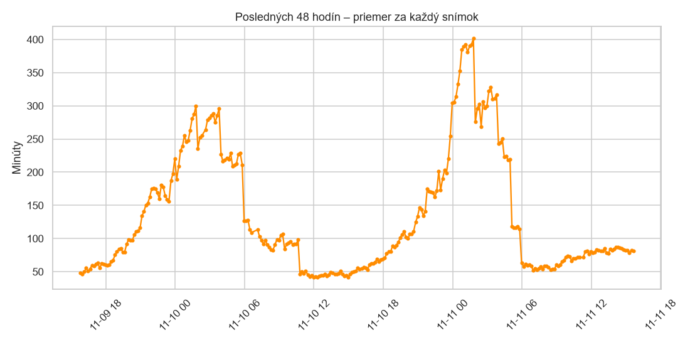
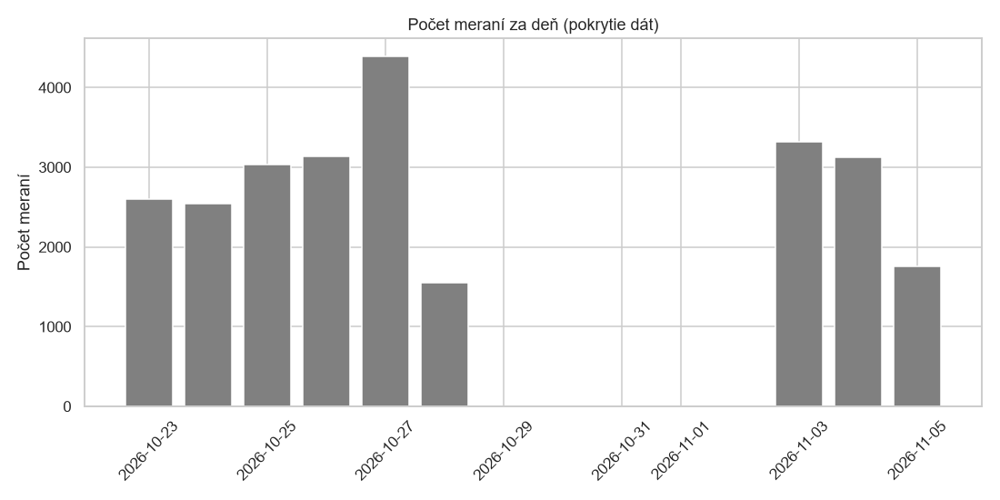
statistiky/ (CSV)